Round 286. "b wins, but the space on the top loop needs to be reduced and the bottom space needs to increase", then on the ladder "plus .01 wins." Option b draws the upper bowl in toward the letter’s axis so the lower bowl is the wider of the two, and trims the top terminal. The amendment rides the waist 0.01 of the x-height higher, which shrinks the top space and grows the bottom in one move. Measured on the convex hull minus the ink, the two spaces go from 0.994 before round 285 to 0.896. The italic already carried that proportion (0.739 at the 400), so its spine is untouched; what changed there is its top terminal, which now has a stated ratio of its own instead of inheriting the roman option’s. Before (round 284) then after, native pixels.
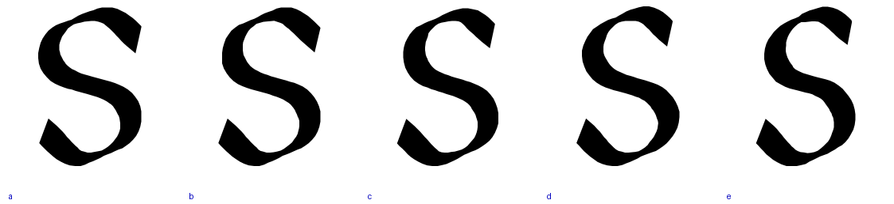
| measure | before 285 | option b | b, waist +0.01 |
|---|---|---|---|
| top space | 33717 | 31849 | 30990 |
| bottom space | 33923 | 33494 | 34571 |
| top / bottom | 0.994 | 0.951 | 0.896 |
| lower bowl / upper | 0.994 | 1.039 | 1.04 |
| top terminal | 69 | 63 | 63 |
| s right / left white (em) | 0.103 / 0.111 | — | 0.100 / 0.108 |
The lowercase median is 0.108 em, so round 284’s spacing still holds with no bearing change. Gates at baseline in all six fonts: only the s and its composites moved, no kern pair changed, glitch and touch counts unchanged, no dents.
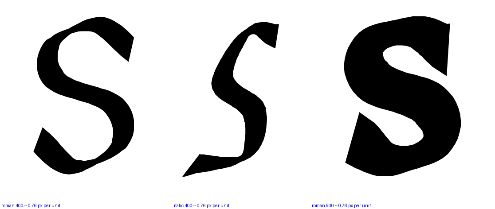
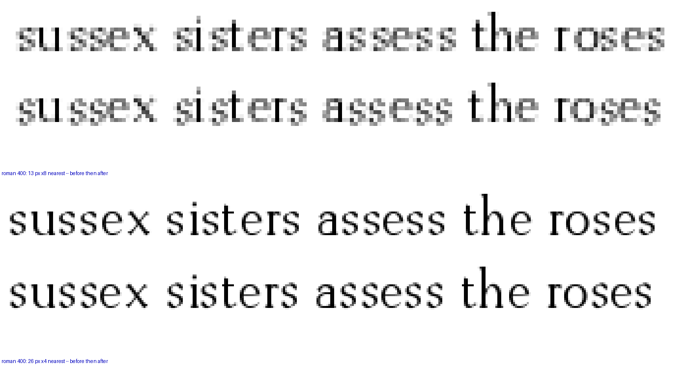
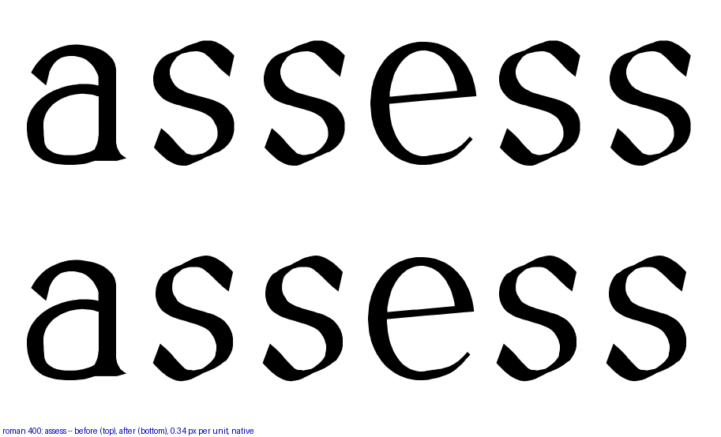
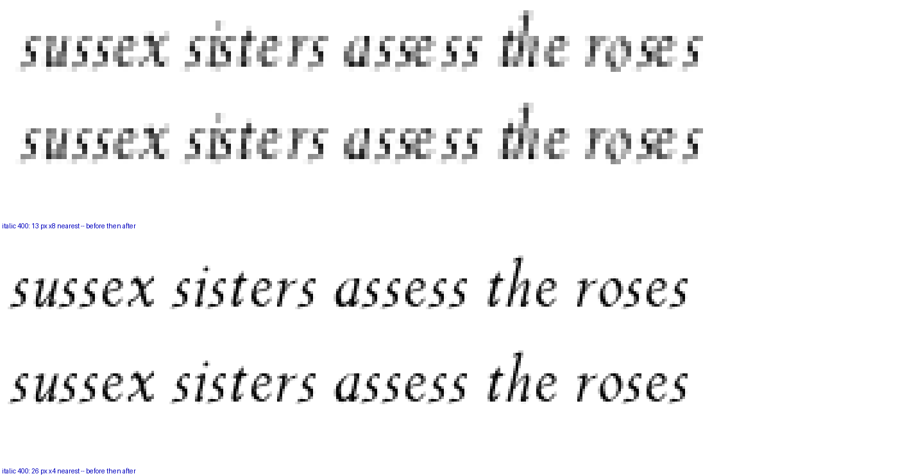
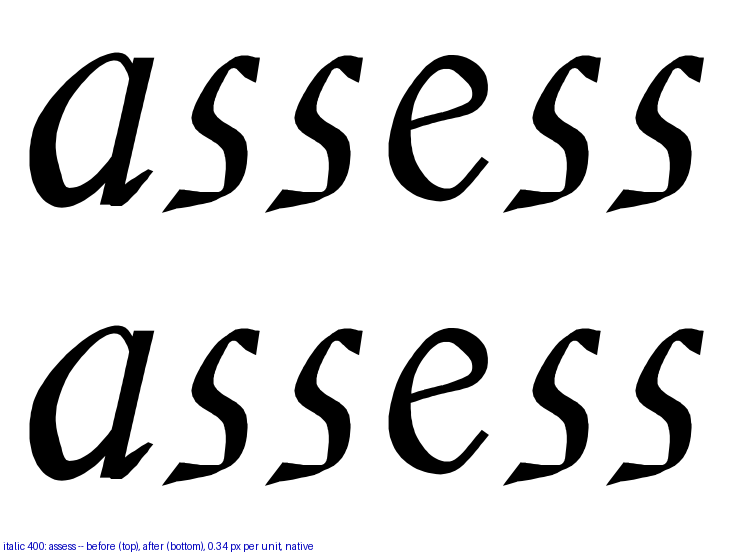
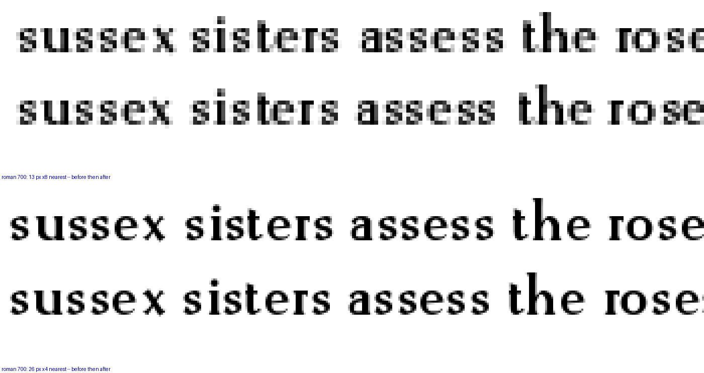
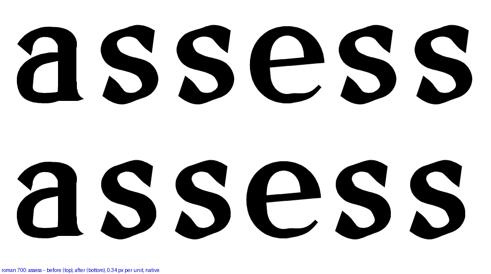
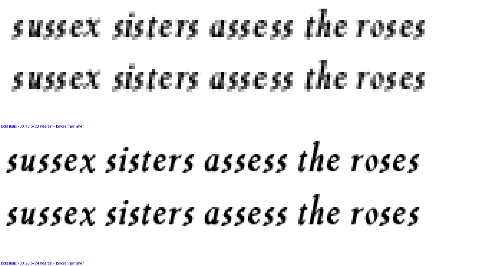
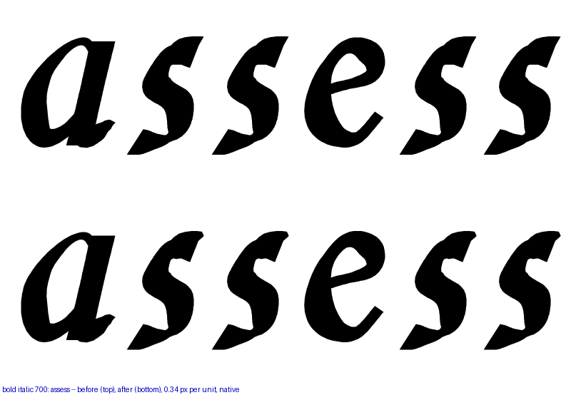
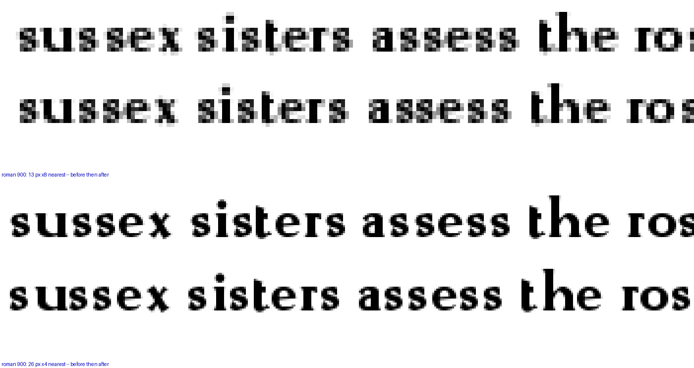
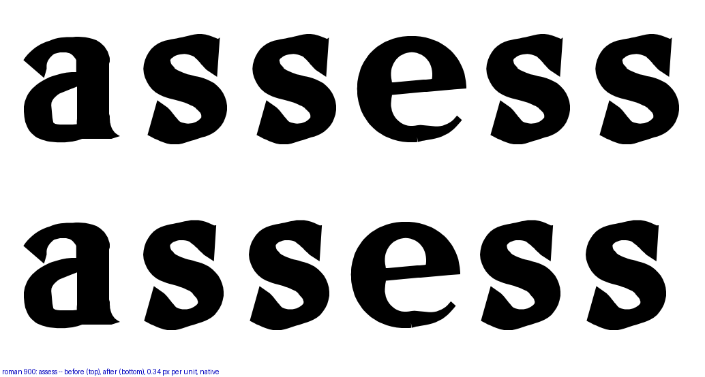
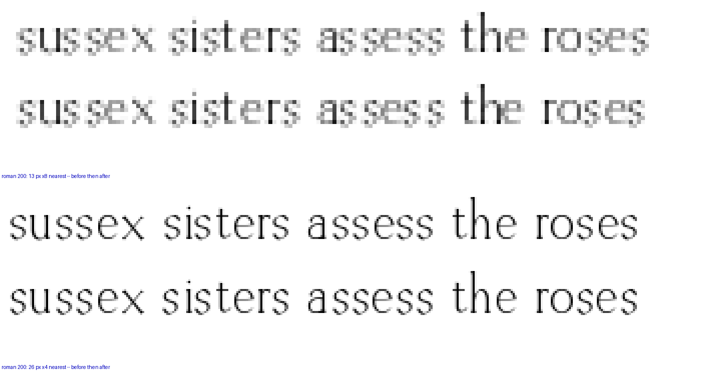
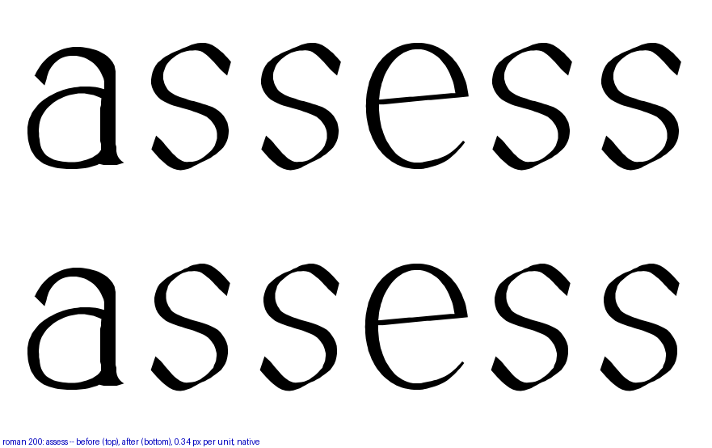